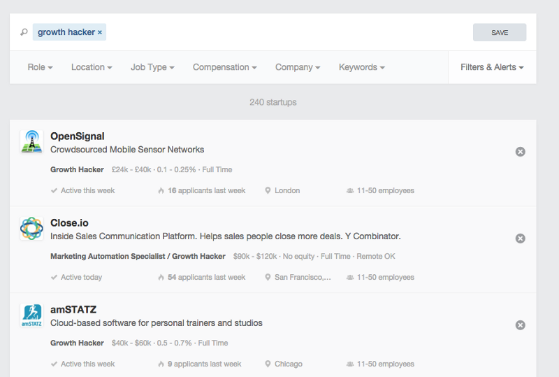
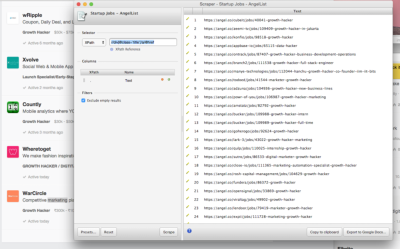
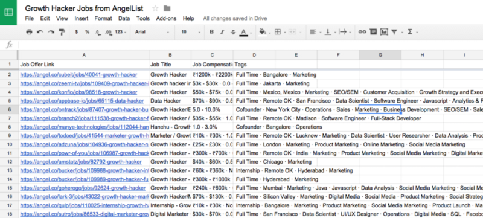
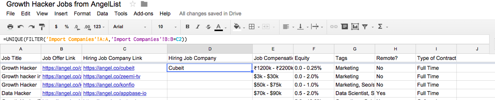
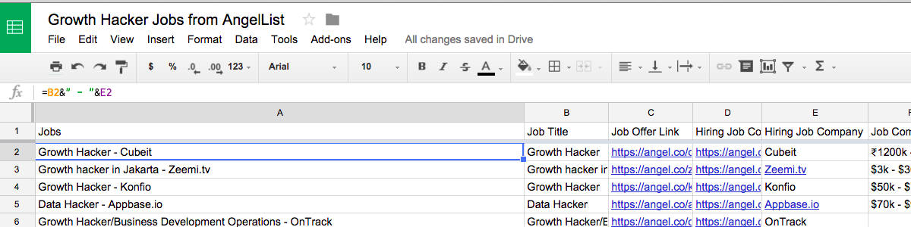
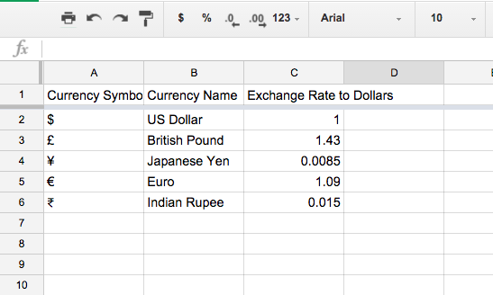
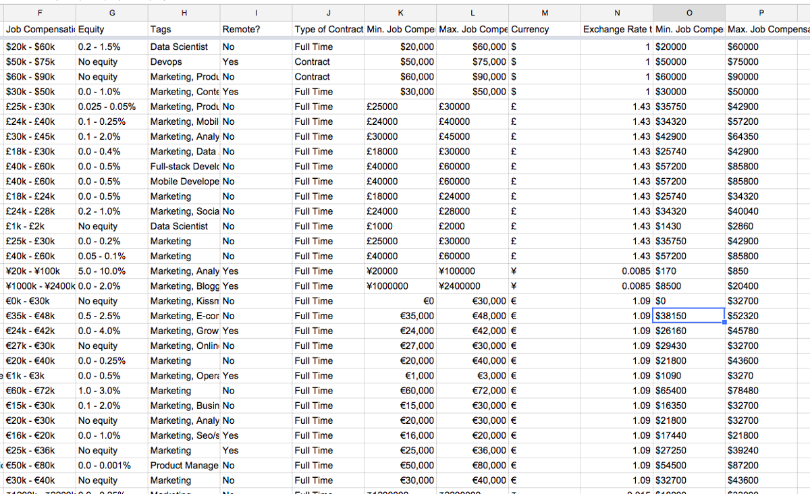

Silk was invited to give a session at Amsterdam’s Growth Tribe Academy. There, I gave a tutorial on how monitor job markets by scraping data from AngelList and pushing it into the data publishing platform Silk.
Here’s the step-by-step tutorial on how to analyse the growth hacker job market to see who’s hiring and to discover employment hubs, most requested skills, average salary and most common job benefits.
(Of course, this isn’t just useful for growth hacker jobs. You could insert any other job description and follow the same instructions to create your own Silk research tool for jobs for data scientists, Java developers, HR specialists, or anything else.)
Here’s our full end result, rich with insights and interactive data visualizations to explore the growth hacker job market according to AngelList. Use it as inspiration and replicate with other jobs!
Tools: Silk, Open Refine (Download it here), Chrome Browser, Chrome Scraper Extension (Install it!), Google Sheets
Useful Links: Data Source, Spreadsheet with Scraped and Cleaned Dataset (copy it on your Drive), Resulting Silk
1. Create Your Dataset
a) Get a List of AngelList Job Offerings for Growth Hackers
(Note: If you have an AngelList API Key, APIs are the best way to create the dataset!)

- Search AngelList for “Growth Hacker” jobs. Use Chrome as a browser. (See this query)
- Get links to all the job offers listed through Chrome Scrape Similar extension. To do this, scroll to the end of the page till all the job offers are loaded. Then click anywhere on the page and right-click with the mouse. Select “Scrape Similar”. In the pop-up window, type the following XPath:
//div[@class=’title’]/a/@href - Copy the results to the clipboard, then create a Google Sheet and copy these job offer URLs in the first column.
- Repeat Step 2. and 3, copying the results in the columns next to the first one, with the following XPaths as well:
- Get Job Title for each job offering:
//div[@class=’title’]/a/text() - Get Job Compensation for each job offering:
//div[@class=’compensation’] - Get Job Tags for each offering:
//div[@class=’tags’]
- Get Job Title for each job offering:
- Create another sheet in your Google Sheet and use it to get a list of all the companies hiring and details about them. To fill in this sheet, repeat the step 2. and 3. with the following XPaths:
- Get Hiring Companies’ Name:
//a[@class=’startup-link’]/text() - Get Hiring Companies’ URL:
//a[@class=’startup-link’]/@href - Get Hiring Companies’ Image:
//div[@class=’browse-table-row-pic js-browse-table-row-pic’]/a/img/@src - Get Hiring Companies’ Tagline:
//div[@class=’tagline’] - Get Hiring Companies’ Location:
//div[@class=’tag locations tiptip’]
- Get Hiring Companies’ Name:
2. Clean Up Your Dataset
a) Clean up your “Jobs” Dataset in OpenRefine
- Download your “Jobs” sheet as a CSV and import it into OpenRefine. (Select UTF-8 as encoding)
- Clean the “Job Compensation” Column:
- Edit Column -> Add Column Based on This Column ->Name the column “Equity”; Expression:
value.split(‘ · ‘)[-1] - Edit Cells -> Transform -> Expression:
value.split(‘ · ‘)[0] - Facet -> Text Facet. Select all Cells with no Currency Symbol. Edit Cells -> Transform -> Expression: leave empty and press “OK”. Reset all filters in the facet sidebar.
- Edit Column -> Add Column Based on This Column ->Name the column “Equity”; Expression:
- Clean the “Tags” Column:
- Edit Column -> Add Column Based on This Column -> Name column “Type of Contract”; Expression:
value.split(‘ · _’_)[0] - Edit Column -> Add Column Based on This Column -> Name Column “Remote?”; Expression:
value.split(‘ · _’_)[1] - Edit Cells -> Transform -> Expression:
replace(value, ‘Full Time · _’_, ‘’) - Edit Cells -> Transform -> Expression:
replace(value, ‘Internship · ’, ‘’) - Edit Cells -> Transform -> Expression:
replace(value, ‘Cofounder · ’, ‘’) - Edit Cells -> Transform -> Expression:
replace(value, ‘Contract · ’,‘’) - Edit Cells -> Transform -> Expression:
replace(value, ‘Remote OK · ’,‘’) - Edit Cells -> Transform -> Expression:
replace(value,value.split(‘ · ’)[0],‘’) - Edit Cells -> Split multi valued cells by ` · `
- Edit Cells -> Split multi valued cells by
, - Edit Cells -> Common Transforms -> To Titlecase
- Facet -> Text Facet -> Cluster. Play with the different clustering algorhityms and decide which instances of the same tag to merge or not to merge.
- Edit Cells -> Join Multiple Value Cells by
,
- Edit Column -> Add Column Based on This Column -> Name column “Type of Contract”; Expression:
- Clean “Remote?” Column:
- Facet -> Text Facet. Select the cell with “Remote OK”. Click “Invert”. Edit Cells -> Transform -> Expression: leave empty
- Facet -> Text Facet. Edit “Remote OK” by replacing it with Yes. Edit “Blank Cells” by replacing with No.
- Add a column with a link to the hiring company for each job offer: Column “Job Offer Link” -> Add Column Based on This Column -> Name Column “Hiring Company Link”; Expression:
value.split(‘/jobs/’)[0] - Export your project as a CSV and import it into your Google Sheet as the “Import Jobs” sheet.
b) Clean up your “Companies” Dataset in OpenRefine
- Download your “Companies” sheet as a CSV and import it into OpenRefine. (Select UTF-8 as encoding)
- Clean ”Profile” column: Edit Cells -> Transform -> Expression:
value.split(‘/jobs’)[0] - Clean ”Tagline”: Edit Cells -> Common Transforms -> Trim Leading and Trailing Whitespaces
- Clean ”Image”: Edit Cells -> Transform -> Expression:
replace(value, ‘-thumb_jpg.jpg’, ‘-medium_jpg.jpg’) - Clean ”Location”:
- Edit Cells -> Common Transforms -> Trim Leading and Trailing Whitespaces
- Edit Cells -> Split Multi-Valued Cells by
, - Facet -> Text Facet. Use Facets to bulk clean up. Show the “Cluster” feature. But essentially this is manual work. Try to achieve a “City, (US State), County” format for location. Then use this to add a “US State”, a “Country” and a “Region” column.
- Edit Cells -> Joint Multi-Valued Cells by
|
- Export your project as a CSV and import it into your Google Sheet as the “Import Companies” sheet.
c) Link the Two Sheets by a Common Column
- Link the two sheets through a key column: In the “Import Jobs spreadsheet, create a column called “Hiring Company”
- Use the ‘FILTER’’ function to lookup the company name in the Company spreadsheet, using the “Hiring Company Link” column as the common value.
- Create a unique ID column by combining the Job Title with the Hiring Company 
d) Currency Conversion in the “Import Jobs” Sheet
- Split the “Job Compensation” column into a “Min. Job Compensation” and a “Max. Job Compensation” column. Use the formula
=IF(F2<>“”, SPLIT(SUBSTITUTE(F2,“k”,“000”),“— ”,false),“”)(This also converts $1K to $1000) - Get the symbol of the currency the compensation is expressed in. Use the formula
=LEFT(Cell_with_compensation,1) - Create another sheet called “Exchange Rates”. Fill it in with three columns: “Currency Symbol”, “Currency Name”, “Exchange Rate to Dollars”. Fill this information in with each of the currencies you encountered in the job compensation column.
- Go back to the “Import Jobs” sheet. Convert all min and max job compensations to dollars, using the VLOOKUP formula to find the exchange rates. Formulas used in this case:
- Column K:
=IF(F2<>“”, SPLIT(SUBSTITUTE(F2,“k”,“000”),“ — ”,false),“”) - Column M:
=LEFT(K2,1) - Column N:
=IF(M2<>“”, VLOOKUP(M2,‘Exchange Rates’!A:C,3,false),“”) - Column O:
=IF($N2<>“”,Substitute(K2,$M2,“”)*$N2,“”) - Column P:
=IF($N2<>””,Substitute(L2,$M2,“”)*$N2,“”)
- Column K:
- Set the format of the cells in these columns to Currency: US $
- Recalculate a “Job Compensation in $” column by joining the min and max compensations with a
—. - Calculate a “Median Compensation in $” column with the MEDIAN function 
3. Analyze and Visualize Your Dataset
a) Import Your Dataset in Silk
- Sign-up for Silk and create your first silk site
- Go to your Google Sheet and set the sharing options to “Anyone with the link can view”
- Copy the URL of your Google Sheet
- On Silk, go to you Dashboard
- Select “Google Spreadsheet” as the import method and copy your URL
- Select the “Import Companies” Sheet
- Delete and rearrange columns
- Some tags needs adjustments before import. This is the case for “Location”, “US State”, “Country”, “Region”. For all four, click on the gear icon and select “Split on other character”. Type
| - Start the Import!
- Repeat step 1 to 7, and this time select the “Import Jobs” sheet
- Some tags need adjustments before import. This is the case for “Company” (Click the gear icon and select “Link to datacard”) and “Tags” (Click the gear icon and select “Split on commas”)
- Start the import!
b) Start Looking for Patterns and Interesting Visuals
- Check out your homepage for auto-generated visualizations. Tweak what you like, delete what you don’t.
- Play around in Explore mode to create visualizations you want on your homepage. Decide the chart type, the variable to plot, the sorting order and the filters. When you see something you like, copy it to the homepage and then go back to exploring.
- Some suggestions:
- Map job offers by hiring company’s location. Add a filter for region. Color the pins on whether the job offering allows remote work.
- Scatterplot: Median compensation vs. Equity. What’s the best offer?
- What are the top 10 European cities hiring growth hackers?
- Is remote work common? Notice any regional patterns?
- What are most common skills (tags) sought after in the North American growth hacker job market?
- What are the top five job offers with the highest maximum or median compensation for a full-time contract?
- Which companies have most job openings for growth hackers?
4. Publish Your Data-Driven Story
What you can do:
- Narrate the main story on the homepage or add smaller stories in separate pages. Note that you can:
- Alternate different layouts (1, 2 or 3 columns) with different background colors (white, dark gray and sand)
- Insert and rearrange any of the visualizations you created in Explore mode
- Add interactive visualizations, text, images, Twitter streams, videos and more
- Configure colors in the visualizations
- Automatically turn each datapoint into a story using “pinning “and templates
- Embed visualizations on other platforms (Medium, Tumblr, your own blog..) or share them on social media (Silk supports Twitter cards!)
- Invite other people to collaborate on your Silk
Here’s our end result! Use it as inspiration and replicate with another job market!
Originallly published on Medium